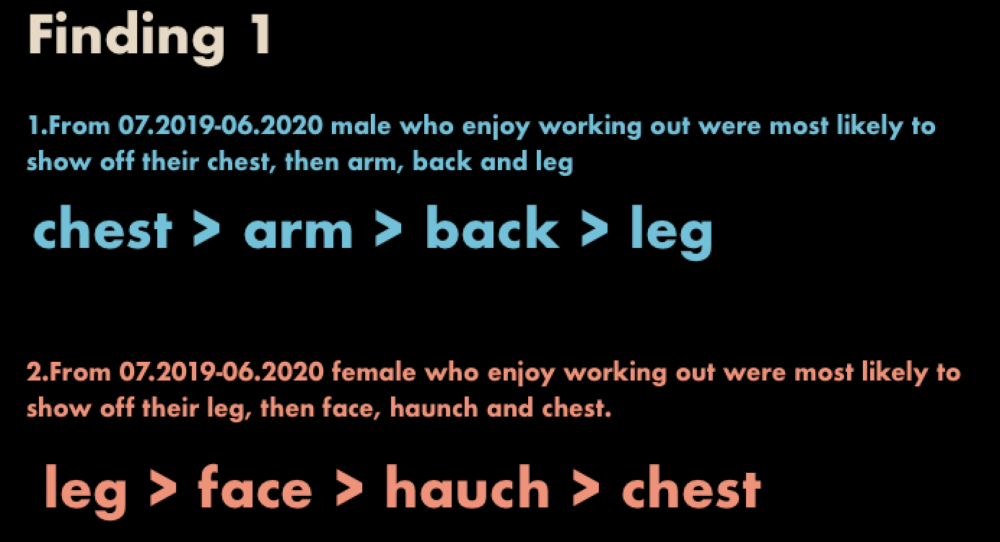
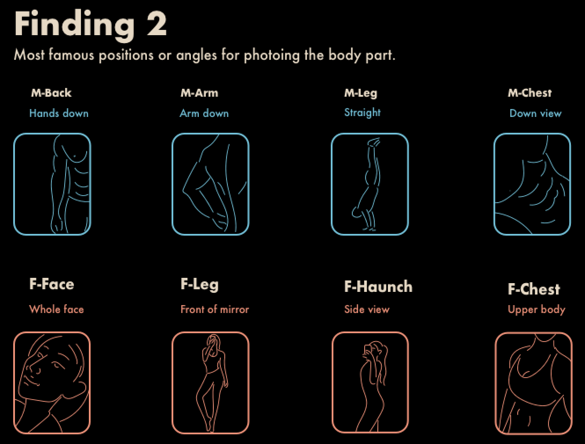

Prototype 3 shows trends in the fitness community from July 2019 to June 2020. Going further, it explains what parts of the fitness community users like to photograph themselves in, and it shows what kind of positions or angles users tend to take when photographing these parts. Finally, it will be presented in the form of interactive web pages.
When male show off their bodies, they most like to show off their chest and arms. The order from big to small is: chest , arms, back, leg.
When female show off their bodies, they most like to show off their legs and face. The order from big to small is: leg, face, haunch, chest.
When female show their face , they prefer the position of whole face. When female show their legs, they prefer the position of front of mirror. When female show their lunchs, they prefer the position of side view. When female show their chests, they prefer the position of upper body.
When male show their back, they prefer the position of hands down. When male show their arms, they prefer the position of arm down. When male show their legs, they prefer the position of straight. When male show their chests, they prefer the position of down view.